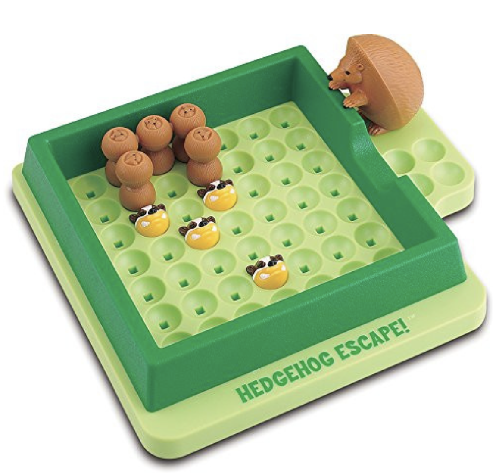

Pathfinder
This puzzle was originally inspired by the NASA expedition to Mars called "Pathfinder". Large inflated balloons protect the Pathfinder while is bounces over the Mars surface to its final destination. Can you help the Pathfinder reach its goal? This original applet (2004) was written by Oskar van Deventer, with puzzle designs by Wei-Hwa Huang.
Aim
Roll the gray Pathfinder object to its goal at the south-east of the board, while avoiding the red obstacles.
Controls
Click the mouse on the board to start the puzzle
Use next to select the next puzzle
Use reset to restart the puzzle
Use previous to select the next puzzle
Use challenge drop-list to select a puzzle
Movement
Use the cursor keys (or N/E/S/W) to roll the gray piece
Use undo (or U) or Ctrl+z undo a move
Use redo (or R) to redo a move
The puzzle was eventually published in commercial form by Popular Playthings circa 2010. It was given a cute theme involving hedgehogs and badgers and entitled Hedgehog Escape. Copies are still occasionally available online, if you search for them.

concept & applet - © Oskar van Deventer - 2004
puzzle design - © Wei-Hwa Huang - 2004
hosted with permission from Oskar van Deventer and Wei-Hwa Huang